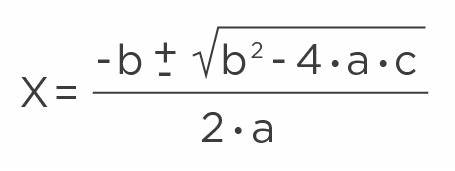
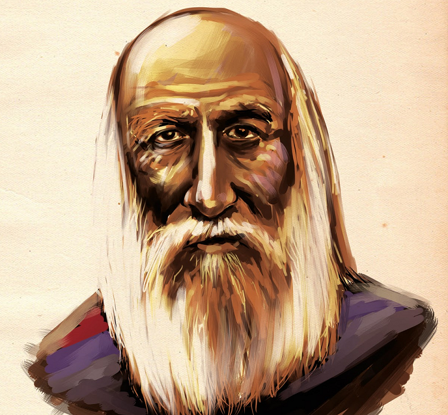

Equação de segundo grau com JS
Resolvendo Bhaskara
Neste exemplo, será usado JS (JavaScript) na construção de uma calculadora on-line que irá resolver problemas de equação de segundo grau, ou a famosa Fórmula de Bhaskara
para isso usaremos HTML, CSS e JS com intuito de demonstrar que com 3 tecnologias é possível se criar programas robustos na tela de seu navegador!
Programa de 2º Grau
Vamos a execução do programa
Selecione os valores para A, B e C
Explicação do Script
O arquivo HTML disponibiliza através da tag input três espaços para se inserir os valores de A, B e C
que serão recuperados por um script em JavaScript que irá calcular o resultado da equação.
Existem centenas de calculadoras de bhaskara on-line, cada uma com suas particularidades, no entanto com o mesmo objetivo.
O arquivo CSS, serve no momento apenas para estilizarmos o programa, no caso apenas mudamos alguns atributos como cores dos
textos de saída e tags input e button.
Caso queira verificar os aquivos JavaScript a fim de aprender como criar sua própria calculadora, visite a página do Git-Hub.